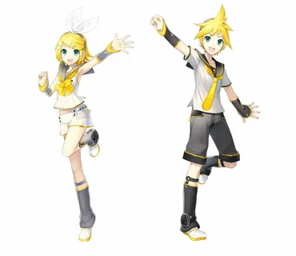

Кагамине Рин и Лен - японский дуэт виртуальных певцов, вторые вокалоиды из серии Character Vocal Series.
Дуэт создан компанией Crypton Future Media 27 декабря 2007 года для программного обеспечения Vocaloid 2, а позднее — для Vocaloid 4 и Piapro Studio.
Изначально Рин задумывалась как отдельный женский вокал на контрасте с Мику Хацунэ, обладающий более мощным и ярким тембром.
В ходе разработки персонажа в Crypton Future Media появилась идея о создании дуэта мужского и женского вокалов из-за надобности в мужском вокалоиде после провала продаж KAITO.
